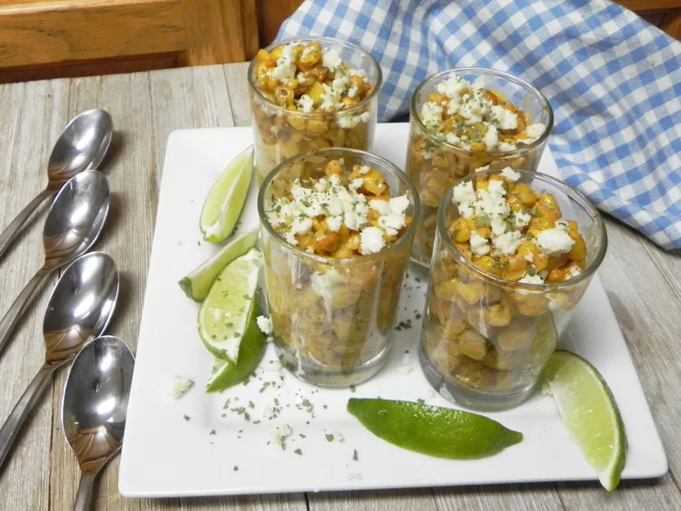

Esquites
Description
Esquites with frozen corn have all the flavor you love from Mexican street corn, but also the ease and convenience of using frozen corn. These are not spicy, but feel free to add cayenne pepper or Mexican hot sauce for some kick.
Ingredients
- 3 tablespoons unsalted butter
- 1 (2 pound) bag frozen corn kernels, thawed and drained
- 1/4 cup lime juice
- 1 and 1/2 teaspoons chili powder
- 1/4 cup mayonnaise
- 1/4 cup crumbled cotija cheese
- 2 tablespoons chopped cilantro, or to taste
- lime wedges (optional)
Steps
- Melt butter in a soup pot over medium-high heat, and cook corn until hot, about 8 minutes.
- Stir in lime juice and chili powder; cook until lime juice is nearly evaporated, about 2 minutes. Fold in mayonnaise and cook 2 minutes more. Turn off heat.
- Spoon into serving cups and top with cotija and cilantro. Serve with lime wedges.